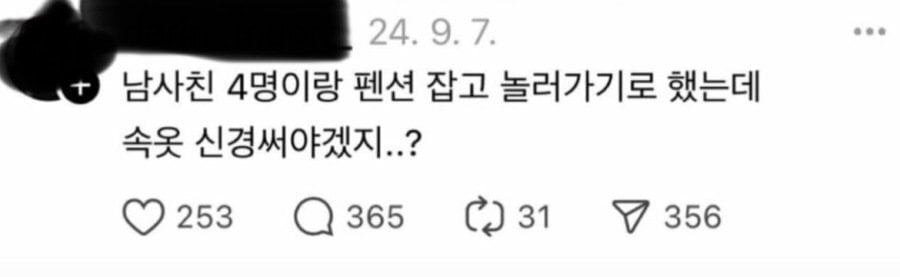

54 · 12 · 6 시간 전 · 원문
저도쫌 ....

수집 당시 댓글 12개
배수지 · 12 시간 전
이사람 누가 dm으로 낚시한게 ㄹㅈㄷ던데 ㅋㅋ
↳ 답글 · 익명
???
↳ 답글 · 유루캠 · 3 시간 전
인스타로 스폰 제의 하는 척하면서 슬쩍 펜션 물어봤는데 4명이라 쉴 시간도 부족했고 힘들었지만 존나 좋았다고 함
↳ 답글 · 간다간다훅간다 · 6 시간 전
뭔지 궁금하네요 ㅋ
악덕팬더 · 12 시간 전
도
야돈처럼살고싶다 · 12 시간 전
부리부리대마왕 · 11 시간 전
또왓네 이색기 ㅋㅋㅋㅋㅋㅋㅋ
jiysnm · 9 시간 전
잡고싶은허리 · 6 시간 전
끄으이으응 · 4 시간 전
ㅋㅋㅋㅋㅋㅋㅋㅋㅋㅋ
윾가놈 · 4 시간 전
ㄹㅇ임?
우쥬설아 · 1 시간 전
구룡터널 그댓글이 이건가...?

이사람 누가 dm으로 낚시한게 ㄹㅈㄷ던데 ㅋㅋ